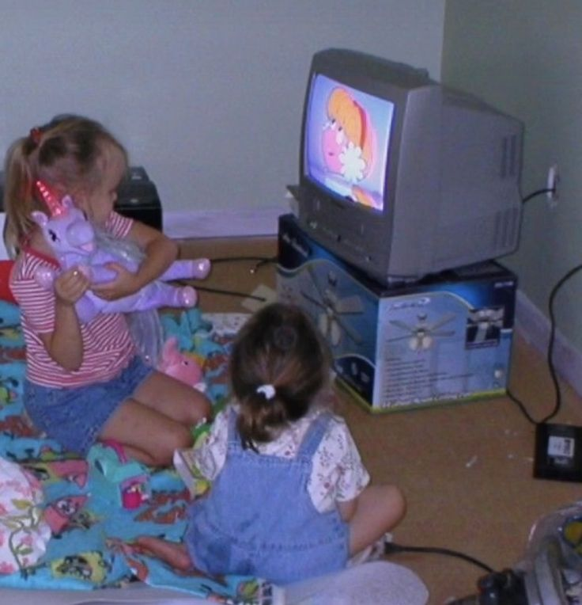

You wake up in your sisters' room from your childhood home. You see your two sisters sitting in front of the TV watching a cartoon that feels vaguely familiar. It's been a while since you saw them but you're filled with a feeling of warmth being near your family again. What will you do?

keep going
go back